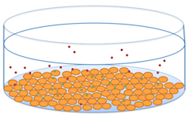
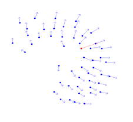

Hi! I'm a mathematician specializing in mathematical biology and stochastic physics. I'm also interested in novel methods of mathematics education for non-STEM related students. And I'm a level 3.0 tennis player (so, needs improvement)!
If you're a biologist here to use one of our models to quantify your assay results, check out Webtools above!
BTW, the picture and sculpture of an HIV virus above is by Luke Jerram and you can find more of his work
here.

HIV Infection: I'm interested in quantitatively modeling the dynamics of HIV infection and treatment. Specific work includes kinetic models of receptor/coreceptor mediated viral entry, quantifying fusion inhibitor efficacy, and the stochasticity of HIV latency and recovery under anti-viral treatment.

Physics of Biological Assays: Plaque assay, endpoint dilution assay, luciferase reporter assay, hemaglutination assay, FACS assay.
Emergence: Biological swarms, molecular evolution (SELEX).
Polymer Physics: X-chromosome inactivation, membrane pore transport.
Publications
- Mistry, B.A., D’Orsogna, M.R., Chou, T. The Effects of Statistical Multiplicity of Infection on Virus Quantification and Infectivity Assays. Biophysical Journal. 114(12):2974–2985. 2018.(link)
- Mistry, B., D’Orsogna, M.R., Webb, N.E., Lee, B., and Chou, T. Quantifying Sensitivity of HIV-1 Viral Entry to Receptor and Coreceptor Expression through Kinetic Models. Journal of Physical Chemistry B. 120(26):6189–6199. 2016.(link)
This is about my teaching.